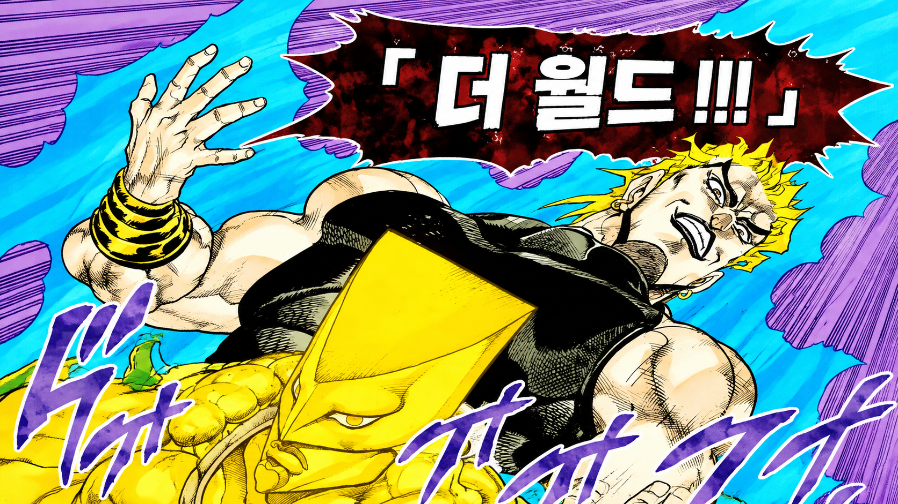

아직 시청 기록이 없어요.
Agent와 시청 지점을 찾거나, 샘플 기록을 불러와 화면을 확인해보세요.
내 서재에 저장한 작품과 회차입니다. 이 기록이 복습과 스포일러 차단 범위를 정합니다.
Agent와 시청 지점을 찾거나, 샘플 기록을 불러와 화면을 확인해보세요.
시즌 3 · 11화까지
시즌 1 · 14화까지
마지막 시청 31일 전시즌 1 · 12화까지
마지막 시청 7일 전저장된 시청 기록을 바탕으로 직전 시즌 복습을 먼저 제안해요.
보기 전의 궁금증부터 원작으로 이어 읽기까지, 필요한 기능을 바로 선택하세요.
카드를 누르면 예시 결과를 바로 볼 수 있어요.
분위기, 전개 속도, 인물 관계가 가까운 애니를 찾아드릴게요.
세계의 비밀을 하나씩 파헤치는 전개가 가까워요.
전투와 인물 관계가 빠르게 이어지는 작품이에요.
분명한 목표를 가진 주인공의 성장 이야기예요.
발표 확장 방향을 실제 화면 형태로 미리 구성했어요.

여기부터는 아직 보지 않은 이야기예요.